In continuous-time systems there are eight generic codim 2 bifurcations that can be detected along
a torus curve:
- 1:1 resonance. We will denote this bifurcation by R1
- 2:1 resonance point, denoted by R2
- 3:1 resonance point, denoted by R3
- 4:1 resonance point, denoted by R4
- Fold-Neimarksacker point, denoted by LPNS
- Chenciner point, denoted by CH.
- Flip-Neimarksacker point, denoted by PDNS
- Double Neimarksacker bifurcation point, denoted by NSNS
To detect these singularities, we first define 6 test functions:
-
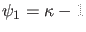 (cf. formula (39))
-
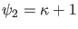
-
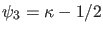
- 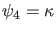
-
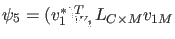
- 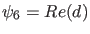
-
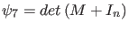
-
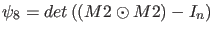
where 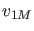 is computed by solving
The normalization of is done by requiring
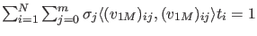 where 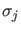 is the Gauss-Lagrange quadrature coefficient.
By discretization we obtain
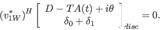
To normalize 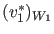 we require
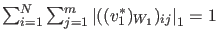. Then
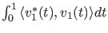 is approximated by
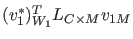 and if this quantity is nonzero, 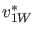 is rescaled so that
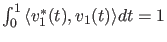.
We compute
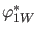 by solving
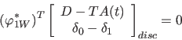
and normalize
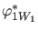 by requiring
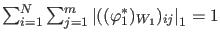. Then
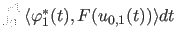 is approximated by
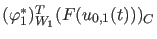 and if this quantity is nonzero,
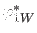 is rescaled so that
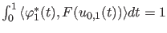.
We compute 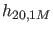 by solving
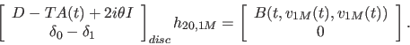
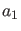 can be computed as
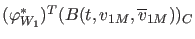.
The computation of  is done by solving
is done by solving
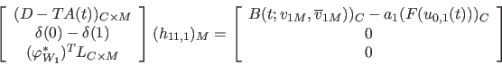
The expression for the normal form coefficient 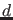 becomes
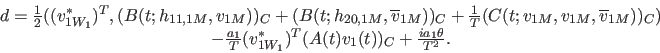
In the 7th test function, 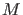 is the monodromy matrix.
In the 8th test function, 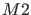 is the
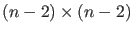 matrix which restricts the 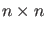 matrix to the subspace orthogonal to the two-dimensional left eigenspace of the Neimark-Sacker eigenvalues.
The singularity matrix is: